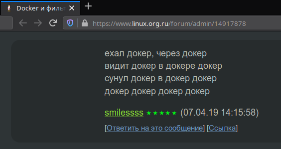
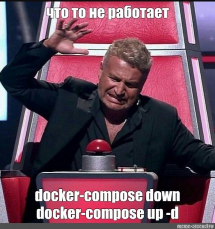

Главная > Linux | Бездна | Сервера > Запуск сервера L2TP IPSec VPN в Docker контейнере
Запуск сервера L2TP IPSec VPN в Docker контейнере
27.11.2019 0 коммент. » Просмотры: 2 861
Иногда нужно получить доступ к ресурсам, доступ к которым ограничен провайдером или системным администратором. Например, если владелец сайта в качестве безопасности закрыл его для всех посетителей не из его страны, а вам нужно туда попасть. На помощь приходят VPN сервера. Сегодня речь пойдет о том, как быстро поднять VPN сервер на своем VPS при помощи Docker.
Исходные данные: самый простой VPS сервер в клауде Hetznera с установленной Ubuntu 19.04.
Шаг 1. Установка Docker и Docker Compose
Добавляем ключ репозитория
curl -fsSL https://download.docker.com/linux/ubuntu/gpg | sudo apt-key add -
|
0 1 2 |
curl -fsSL https://download.docker.com/linux/ubuntu/gpg | sudo apt-key add - |
Добавляем репозиторий
sudo add-apt-repository "deb [arch=amd64] https://download.docker.com/linux/ubuntu $(lsb_release -cs) stable edge"
|
0 1 2 |
sudo add-apt-repository "deb [arch=amd64] https://download.docker.com/linux/ubuntu $(lsb_release -cs) stable edge" |
Обновляем списки пакетов
|
0 1 2 |
Устанавливаем docker и docker-compose
sudo apt-get install -y docker-ce
|
0 1 2 |
Проверяем что докер установился и запущен
# systemctl status docker ● docker.service - Docker Application Container Engine Loaded: loaded (/lib/systemd/system/docker.service; enabled; vendor preset: enabled) Active: active (running) since Wed 2019-11-27 13:40:28 CET; 34min ago Docs: https://docs.docker.com Main PID: 1038 (dockerd) Tasks: 20 CGroup: /system.slice/docker.service └─1038 /usr/bin/dockerd -H fd:// --containerd=/run/containerd/containerd.sock
Опционально, если работаете не от пользователя root, и не хотите каждый раз при использовании докера запускать его через sudo, добавьте своего пользователя в группу docker
sudo usermod -aG docker ${USER} # перезагружаемся или выполняем чтобы изменения вступили в силу su ${USER} # проверяем что мы в группе docker id -nG
|
0 1 2 3 4 5 6 7 8 |
sudo usermod -aG docker ${USER} # перезагружаемся или выполняем чтобы изменения вступили в силу |

Шаг 2. Подготовка docker-compose.json
На этом этапе вам нужно или самому собрать образ или воспользоваться готовым, я выбрал уже проверенный fcojean/l2tp-ipsec-vpn-server , имеющий более 100.000 загрузок.
Создаем папку для будущих файлов
mkdir -p /opt/docker/l2tp-ipsec-vpn-server
|
0 1 2 |
К сожалению, готового docker-compose.yml для выбранного образа я не отыскал, поэтому составил свой:
nano /opt/docker/l2tp-ipsec-vpn-server/docker-compose.yml
|
0 1 2 |
version: '3' services: vpn: image: fcojean/l2tp-ipsec-vpn-server restart: always env_file: - ./vpn.env ports: - "500:500/udp" - "4500:4500/udp" volumes: - /lib/modules:/lib/modules:ro privileged: true hostname: l2tp-ipsec-vpn-server container_name: l2tp-ipsec-vpn-server
|
0 1 2 3 4 5 6 7 8 9 10 11 12 13 14 15 16 17 |
image: fcojean/l2tp-ipsec-vpn-server - /lib/modules:/lib/modules:ro hostname: l2tp-ipsec-vpn-server |
теперь в этой же папке создаем файл конфигурации
nano /opt/docker/l2tp-ipsec-vpn-server/vpn.env
|
0 1 2 |
# Define your own values for these variables # - IPsec pre-shared key, VPN username and password # - DO NOT put quotes around values, or add space around '=' # - DO NOT use these characters within values: \ " ' VPN_IPSEC_PSK=MY-IPSEС-KEY # Table of user object with login and password attribute in Json format VPN_USER_CREDENTIAL_LIST=[{"login":"MY-USERNAME","password":"MY-PASSWORD"}] VPN_NETWORK_INTERFACE=eth0 #VPN_DNS1=192.168.0.1 #VPN_DNS2=192.168.0.1
тут вам надо поменять
Шаг 3. Включаем модуль ядра af_key
Как написано, в инструкции к образу fcojean/l2tp-ipsec-vpn-server, необходимо включить модуль af_key
Проверить что он не загружен, можно вот так
|
0 1 2 |
проверить что он доступен
|
0 1 2 |
включить можно вот так
|
0 1 2 |
для постоянной автозагрузки, добавляем его в файл
nano /etc/modules-load.d/modules.conf
|
0 1 2 |
cat /etc/modules-load.d/modules.conf # /etc/modules: kernel modules to load at boot time. # # This file contains the names of kernel modules that should be loaded # at boot time, one per line. Lines beginning with "#" are ignored. # Need to run L2TP vpn server: fcojean/l2tp-ipsec-vpn-server af_key
Шаг 4. Запускаем VPN сервер
cd /opt/docker/l2tp-ipsec-vpn-server/ docker-compose up -d
|
0 1 2 3 |
проверяем что контейнер запущен и работает
docker-compose ps Name Command State Ports -------------------------------------------------------------------------------------- l2tp-ipsec-vpn-server /run.sh Up 0.0.0.0:4500->4500/udp, 0.0.0.0:500->500/udp
|
0 1 2 3 4 5 6 |
-------------------------------------------------------------------------------------- l2tp-ipsec-vpn-server /run.sh Up 0.0.0.0:4500->4500/udp, 0.0.0.0:500->500/udp |
Если что-то пошло не так, вам помогут команды

Шаг 5.Настройка клиента
Каких-то особенных инструкций по настройке нет. Настраивайте согласно инструкции к вашему клиенту и используйте данные указанные в файле vpn.env. В моем случае клиентом является маршрутизатор Mikrotik, где я просто ввел: ip, ipseс хеш, логин и пароль - все заработало "из коробки".
Заключение
Текста получилось много, но фактически, все сводится к:
так гораздо проще